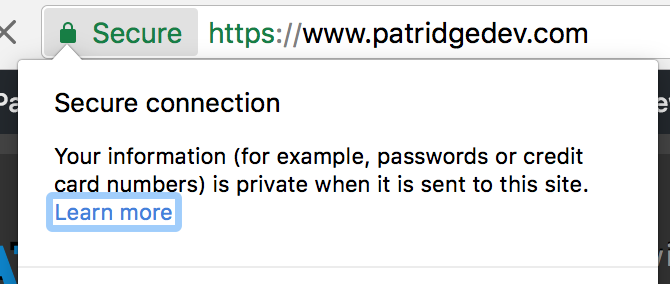
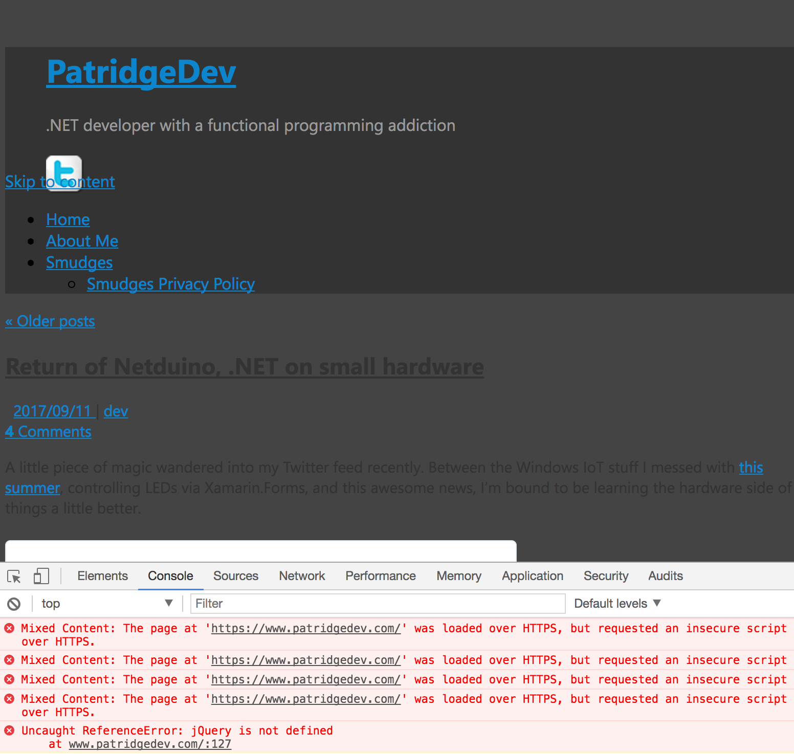
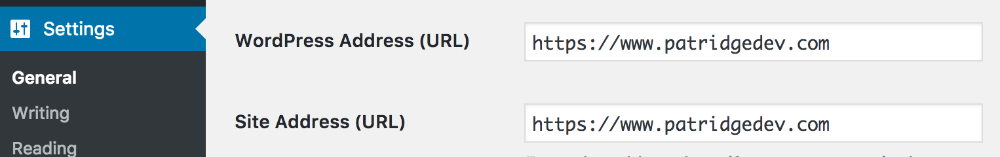

With some helpful pursuasion from Planet Xamarin, I decided my blog needed to support HTTPS requests. I’ve wanted to find a way to support HTTPS traffic on my blog for a while, but I wanted to find a solution that would Just Work™ without me doing the leg work. I’ll stick to writing the blog posts and let someone else worry about hosting details.
Just like anything security-related, setting up SSL intimidates me a bit (more so because this often involves the dark magic of DNS records). I’ll do security when I have to, but my prerequisite is always that I read so much about the topic I feel comfortable explaining every decision I make to either an expert or someone completely unfamiliar with the topic.
Encrypting patridgedev.com traffic
This blog is currently a WordPress site on a host using AdminPanel. I have spent hours in IIS for ASP.NET sites, but almost nothing on Linux hosting. It’s all just me poking around hoping to find things. Fortunately, when it comes to SSL support, there are simple options that can bolt on to other hosting: specifically Let’s Encrypt certificates and Cloudflare’s secure proxy system.
Everything I looked into for Let’s Encrypt said to use the settings in AdminPanel, but that required some administrator management to enable. These are not my servers, so that was a no-go.
Cloudflare is a proxy between the world and my site that just happens to offer some mostly-automated, and free, SSL support. You give it a domain, it scans the DNS for that domain and creates a new DNS layer, with some requests going through their system before your servers see them. With those DNS records in Cloudflare’s system, you simply update your nameservers at your domain registrar, Namecheap for most of my domains. (Disclaimer: if you buy Namecheap services through that link, they’ll give me little bit as an affiliate.)
In doing this proxy dance through Cloudflare’s DNS, they can encrypt the connection between any web visitor and the Cloudflare servers. These servers then make requests to my existing servers and return the result through that encrypted connection, making patridgedev.com “support” HTTPS requests. You could argue that the connection isn’t yet encrypted end-to-end, which is true, but it’s way better than before where the connection could be compromised at any point from your computer to my servers.
There was zero downtime with this transition. My old DNS entries went away, and the new Cloudflare ones took over. Unfortunately, it also didn’t magically make my site SSL-awesome.

Making WordPress SSL-awesome
You probably don’t want to stop here, as most browsers will block mixed content like this. If a malicious attacker can intercept your HTTP requests for the JavaScript on an HTTPS web site, they can do all sorts of nasty things (stealing authentication cookies, making requests on your [authenticated] behalf, changing content in subtle ways). You really do want the browser to prevent that for important sites, even if it means things break. For patridgedev.com, I just don’t want anyone to have such a bad experience on HTTPS, so I had to fix it.
Most of these issues were because links were still being fully qualified to https:// inside WordPress. The simple solution to this was supposed to be setting the WordPress Address and Site Address to https://www.patridgedev.com under Settings>General, but that didn’t seem to do anything for the site. In fact, it made it so my admin WordPress pages would get stuck in a redirect loop.

Investigating with Chrome Developer Tools showed a request being made over HTTPS and an immediate redirect to the exact same HTTPS URL, meaning it wasn’t redirecting back and forth between two places as I first suspected. I didn’t have anything custom in an .htaccess file, so it wasn’t causing the redirects. The DNS settings didn’t have anything funky that would cause this, just normal A records for www and non-www. I even searched my site’s code for instances of http:, but that was a really noisy set of search results.
My searches for “WordPress too many redirects” were finding lots of potential suspects, but none seemed to apply to my site. Once I added “Cloudflare” into the search term, I stumbled on this Stack Overflow question where the original source appeared to have been having an .htaccess issue. The question had one sad no-votes (at the time) answer that turned out to be my magic bullet.
Inside WordPress is an is_ssl method that checks a couple $_SERVER variables to decide if the current request is using HTTPS and/or port 443, neither of which is technically true for HTTPS requests at that point. WordPress was not seeing HTTPS requests, because they really aren’t. The connection to Cloudflare is secure, but my site is seeing Cloudflare’s proxied requests via old-school port-80 HTTP.
This is_ssl method gets called all over the place to decide how to prefix fully-qualified URLs with a protocol. In order to get through that logic, we have to force the $_SERVER['HTTPS'] variable to be true at the right time before that method is ever called. That’s exactly what the Stack Overflow answer establishes. We set up a little extra check in the site’s root wp-config.php file for a particular header seen on Cloudfare’s proxied requests hitting my site.
php
if (isset($_SERVER['HTTP_X_FORWARDED_PROTO']) && $_SERVER['HTTP_X_FORWARDED_PROTO'] == 'https') {
$_SERVER['HTTPS'] = 'on';
}
With that in place, we force the HTTPS variable to be 'on' for these requests whenever is_ssl is later called for URL generation, resulting in much happiness. There were still a few non-SSL requests on my blog pages, most of which was my own doing.
Cleaning up the last errors
I had a few widget HTML blocks that were referring to HTTP content: an ancient Amazon affiliate script include, an old Stack Overflow profile badge image, an Apple App Store widget for Smudges, and a lot of embedded post images (and post cross-links). All said, it was just a visual find-and-replace job in WordPress. Only the Apple widget wasn’t as simple as adding an “s” to a URL.
The App Store widget definitely doesn’t cooperate with a HTTPS page. Presumably, it is mishandling things on a secure connection. It’s especially evil since it seems to render fine, so the non-SSL request is totally unnecessary. Unfortunately, even the latest iframe HTML from Apple hasn’t changed, so the error won’t go away.
It turns out that I had a tendency to be inconsistent when embedding images in my posts. While there are probably ways to do mass find-and-replace efforts in WordPress, I just opened all my posts individually and did the work there. It wasn’t as bad as it sounds; only a handful of posts had the domain hard-coded, and I haven’t written enough posts to feel intimidated by the count.
I probably still need to set up a forced redirect for non-SSL requests to be secure by default. This could also make sure search engines don’t see HTTP and HTTPS pages as different content, but I’ll work toward that another time, maybe when I finally get to rewriting this blog as a static-content site (e.g., Jekyll and GitHub Pages).
I’m hoping none of this will affect anyone reading blog posts here, but if you see anything looking unusual, drop me a line on Twitter.